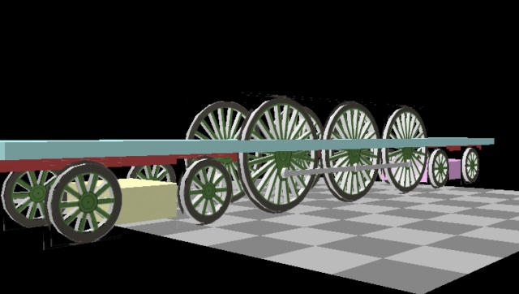

A Steam Loco for MSTS Using 3DCanvas
by Paul "decapod" Gausden
Chapter 2A - Round Wheels
I imagine you are all eager to get this beast running?
These days I hardly ever put the model into MSTS before it is finished, but this time round I will at least get something going by the next lesson (I hope).
I am also going to build everything below the footplate level first, so it will not look like a steam engine until quite late on. I have my reasons for this which may be apparent later.
One thing I forgot to mention in Lesson 1 - also make sure you have photos of your subject, plans are not always easy to interpret and often miss some detail.
Here is the 4-6-4 and Ian's I3 4-4-2 dressed in Southern Railways livery - probably in Urie Sage Green from early 1920's, black edging with white trim lines. (Haresnape, Railway Liveries 1922-47)
On with the modelling... or should I say texturing
What we have doesn't look like it will run very well on rails, what with it's square wheels. Also if we want to try and get something running quickly, every part on our new model must have a texture assigned to it.
Going back to our two wheel masks bitmaps we saved earlier, load these into your paint program.
As a rule of thumb, I generally use 256x256 masks for wheels of 4' and over and 128x128 for smaller (or sometimes 192x192) - again, sticking to these sizes is important for texturing as it allows us to accurately map onto the wheel so it doesn't appear to wobble.
- To the main driving wheel mask, I first add the connection point for the con rod onto the driver mask - on the plan this is 30 pixels down and about 35 pixels wide - the wheel on the plan is 218 wide, so on the texture I need to paint a white circle 35/256*218 = 43 pixels wide and 30*256/218 = 35 pixels below the centre - then fill in the appropriate areas where it joins the hub.
- What I do next is create a blank 512x512 TGA file (which will become our ACE file later).
- copy the driving wheel mask and paste it into the _mask_ channel of the new TGA, positioned in the top left (so it takes up the top left quarter of the image)
- resize the bogie mask to 128x128, and attempt to clean up any grey areas that appear by filling with white or black for light grey or dark grey areas (PP7 uses magic fill tool set to a 50% range, then click on white area, switch to black and click on black areas) - also make sure the hub centre is about the right diameter in relation to the plan.
- copy and paste the bogie mask onto the TGA file mask channel and position it at x=256, y=0 - next to the driving wheel but not overlapping.
- finally, on the colour area of the TGA, colour in the wheel and add some detail - To get a nice "aliased" effect, I drew the hub rings with a slightly feathered paintbrush, starting with the largest in the dark colour, then one slightly smaller (2 pixels smaller) in the flat green - and so on till the middle dot.
Accuracy is important for this job otherwise the rings will wobble when running - remember the paint program works from the top left corner, usually x=0 and y=0, so the centre of the driving wheel is at x=127 y=127.
Next to the bogie wheel, I added a few small squares of black/brown splodges, grey and a brown edge which get used to cover large amounts of the model.
I "cut out" the buffer beam shape and added it to the texture and finally, borrowed the con rod texture from my Aberdare - which was originally drawn just as a grey box with shading to make it appear 3D (more on that later)
I then saved the texture as LB464W.TGA - here is an idea of what it looks like so far...
Back to the model...
In the control panel on the left, select the Material panel.
On the material Palette, select the second tab (Primary texture) and use the "open" to select the new texture.
You should now see something like this:
Note the settings for the lighting properties - make sure you read the Train Simulator tutorials in the 3D canvas help about what happens when you change these values. (In practice I rarely change from the values shown here)
- Now press the "crop texture" button (green field with red square on it) - the texture pops up.
- Drag the red square around the driving wheel - now to fine tune, enter exact values in the lower 4 fields Origin Left 0.0, Top 0.0, Width 0.5 Height 0.5 - These are what is known as UV values, basically a fraction of the width and height of the texture. Because we have been exact with the wheel size, we can specify exact values. Press OK.
- Now set the Orientation selection on the top menu (see lesson zero) to "Edit using face coordinates" and look at the driving wheels on the right side (from slightly below)
- Select the Fill tool on the right menu bar and click on the "faces" and "flange" objects for the 3 drivers on both sides.
For the Bogie wheels, do the same - just adjust the texture coordinates to 0.5,0.0,0.25,0.25 and use the fill tool straight away on all flat faces.

I'll stop for the moment to make sure everyone no one has problems...
I have also posted a small object library on the Highworth site, along with a couple of other plugin updates (not needed till later). If others would like to contribute library parts, it may be worthwhile zipping them up and sending them to me so I can put them all in one library.
The plugin did accept feet/inches in the inputs before, but they weren't reliable. Now you can work reliably (? I hope) even mix feet/metres in the inputs: by entering 3'4.5" (or 40.5") for the main wheel diameter it will directly convert it to metres or decimal feet depending on how you have set up the program.
It's worth adding that the basics of creating texture files and alpha channels using Paint Shop Pro v7 are covered in chapter 1 of Ian MacMillan;s '4 wheel wagon' tutorial available from http://www.amabilis.com
.